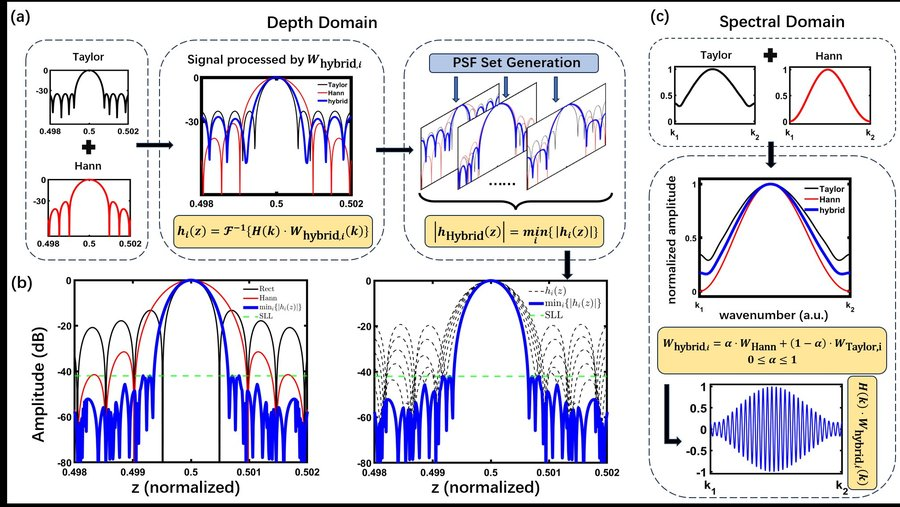
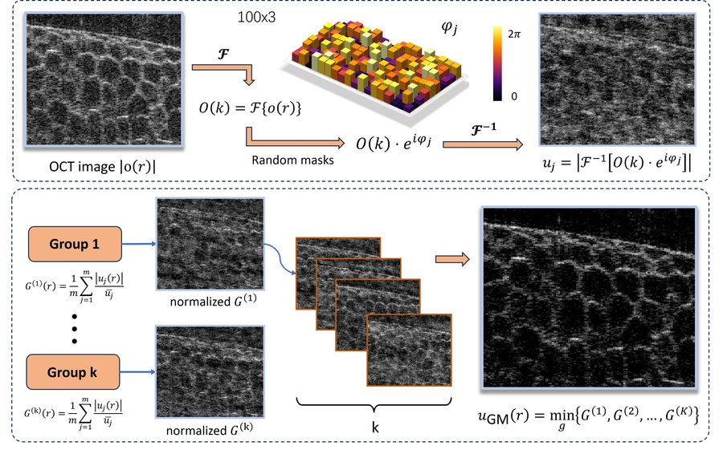

Optics & Laser Technology, 2026
JCR Q1
IF 5.0
Undergraduate researcher at Sun Yat-sen University working on computational optical imaging, frequency-domain signal processing, and biomedical photonics.
I work on computational optical imaging, with a focus on signal processing algorithms for optical coherence tomography (OCT). My current work includes spectral windowing for sidelobe suppression and statistical frameworks for speckle noise reduction.
My research sits at the intersection of Fourier optics, computational imaging, and biomedical photonics. I am especially interested in physics-informed reconstruction pipelines and robust image formation methods for biomedical imaging systems.

Representative work in OCT sidelobe suppression, spectral apodization, and coherent imaging.


Press coverage and institutional news related to my research.